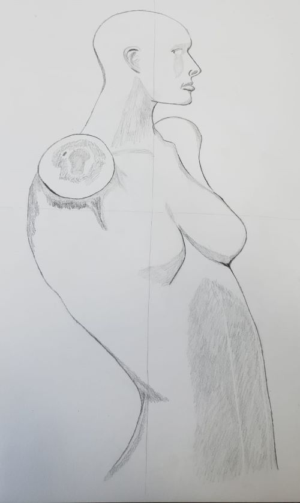

busy...17.feb.24
wow... i have been SO busy and tired lately.
it's been more than a month since my grandma's passing. i've been handling it fine for the most part, though i think that's probably because i still find it hard to believe that she's really gone. a lot of things remind me of her. i stopped at a home depot looking for insecticides and an old lady started talking to me about how the product i was looking at is the best one because she uses it too, how she doesn't like to use the drying machine, and how she cooks a lot of food when shes alone on purpose so she can have an excuse to invite her family. it made me smile a lot. my grandma was exactly like this.
it also pains me that i can't tell her about all the stuff i've been doing for uni. tell her about my days. sometimes i just lie in bed and say all the things i would say to her to the ceiling. in hopes that she can maybe hear me. i really don't know if it works, but i don't mind talking to myself for a couple of minutes either way.
talking about beliefs and all of that, my grandma was a very religious person. though she always did things her own way. and she always respected me not giving a fuck about all of that. which is something very RARE in christians that i have stumbled upon in my life.
one of my grandma's neighbors came to visit me with a handful of books about finding hope and all that. which is nice i suppose, but of course these books were all centered around god and christianity. which, again, i do not give a fuck about. and this man knew this. i said uh oh
in the back of my head. i saddly knew what was coming. this man had the fucking audacity to say to me "i know your grandma would be very happy to see you again in heaven someday and i would like to guide you there" .................................................................. you're telling me that my grandma died and instead of being a NORMAL person saying you're sorry for my loss, you decided to try and manipulate me into your religion and beliefs using my grandma's fucking passing. FUCK YOU DUDE!!!!!! "these books will help you find hope again" and your ass is looking dumb as hell right now because i am more hopeful than i've ever been in my entire life. from the bottom of my heart, fuck that guy. i hope one day you will see that not everyone has to believe in the same things that you do in order to be happy. idiot. 
*tucks my hair behind my ear* sorry, i tried to keep it classy but having gone to a catholic school, i can smell this shit from miles away.
MOVING ON!
one of the reasons as to why i am hopeful despite of the tragedy i've endured the past month is because of uni! i feel like it takes me more time to do things compared to other people (while i get the hang of things), but i've been really liking it so far! sadly i could not get in a computer science (related) class this semester because i did my schedule a bit late (and lacking a lot of info, everything is so complicated in here...) but hopefully i will be taking it on my next semester and see how that's like!  students have all been pretty friendly for the most part. i've been sitting at the front in all my classes so i can push myself to participate more and it's been working so far! i think my favorite classes that i'm taking right now is art and precalculus. i think they are both fun in their own ways. at least with precalculus i feel like i can chill for a little bit in comparison to the other classes  but i am very happy to be there on my own terms.
but i am very happy to be there on my own terms.
i feel like despite everything, i've been feeling much happier and my mental state feels much better as well. i am just a bit tired from everything i've been doing the past month including: cleaning up my grandma's house, moving to a new apartment, dealing with uni and my ~ special ~ admission case. it's just a lot! and i feel like i can't even think or breathe at times. but i am doing better mentally.
moving into a new place is fun and all until you find out it has german cockroaches EVERYWHERE! i called an exterminator and that is being under control now. but my lord, are those things annoying as hell. i don't have wifi so before going to sleep my nightly routine has become to watch something in a blu ray player my dad let me have. i have watched kaiba (12 episode anime, for context) 2 times the past week. that's also a good example of how i've been doing. i also just love kaiba a lot...
all of this is also the reason as to why i've barely done anything here the past month. i will always keep working on my website as long as i have free time, but the format of some of the things i used to do in here will have to change because of this.
the listening logs that i used to do on a monthly basis is probably the biggest (and i think only?) change out of all of this. i love listening to new music and writing my thoughts on them. but i definitely have not found the time to even listen to new stuff the past 2 months. i was thinking of instead of monthly, i could do them by season (spring, fall, etc). it's an alternative, but i'm not very sure.
ANYWAY! i hope you're all doing good as well! i've haven't had the time to check my internet neighbors' sites or to reply to messages on my guestbook, but i really appreciate every single one of you who take the time of their day to check my site out. thank you! hopefully i can be here more often in the coming month or so, either way, take care everyone  i will now continue doing my little tasks
i will now continue doing my little tasks